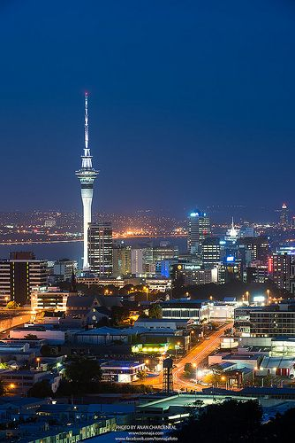
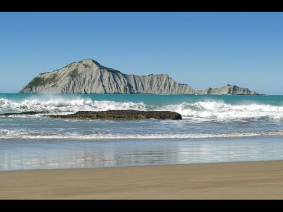
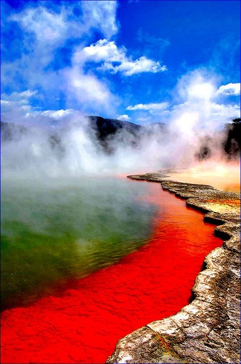
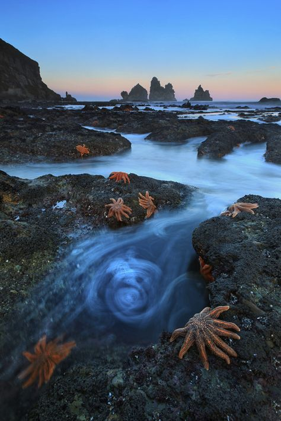
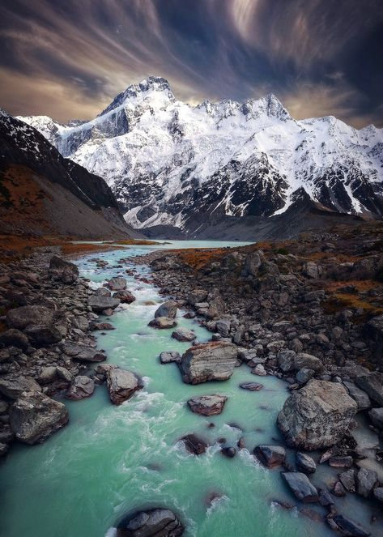
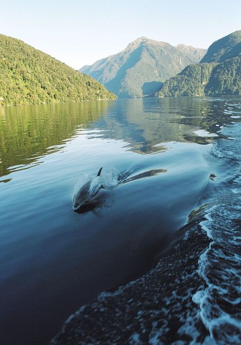
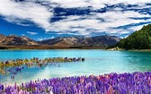

Kia Ora
Welcome to an official page of Tourism in New Zealand

Art Gallery, Christchurch

Maori Rock Cravings, Taupo

Auckland City, Auckland

Waimarama Beach, Noeth Island

Wai O Tapu Thermal Wonderland, Rotorua

Starfish Colony, South Island

Hooker Valley, Canterbury

Fiordland National Park, South Island

The Blue Pools, Queenstown

Tekapo Lake, Mackenzine Basin